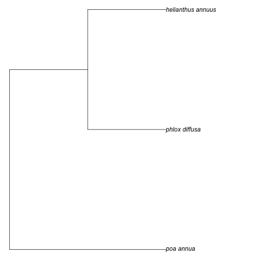
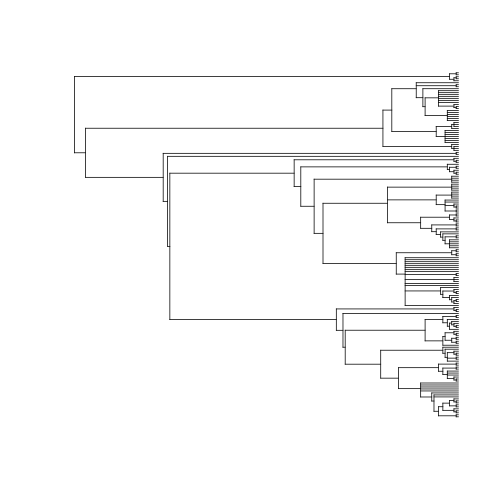
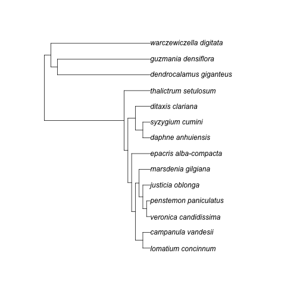

brranching - an interface to phylogenetic data
Description
Brranching is an interface to many different sources of phylogenetic data (currently only from Phylomatic, but more sources to come). It is used to query for phylogenetic data using taxonomic names and can be used to visualize the evolutionary history and relationships among individuals or groups of organisms.
Installation
Stable CRAN version
install.packages("brranching")Or dev version
install.packages("devtools")
devtools::install_github("ropensci/brranching")Phylomatic
Query Phylomatic for a phylogenetic tree.
taxa <- c("Poa annua", "Phlox diffusa", "Helianthus annuus")
tree <- phylomatic(taxa=taxa, get = 'POST')
plot(tree, no.margin=TRUE)
plot of chunk unnamed-chunk-5
You can pass in up to about 5000 names. We can use taxize to
get a random set of plant species names.
library("taxize")
spp <- names_list("species", 200)
out <- phylomatic(taxa = spp, get = "POST")
plot(out, show.tip.label = FALSE)
plot of chunk unnamed-chunk-6
Bladj
library("phylocomr")
ages_df <- data.frame(
a = c('malpighiales','eudicots','ericales_to_asterales','plantaginaceae',
'malvids', 'poales'),
b = c(81, 20, 56, 76, 47, 71)
)
phylo_file <- system.file("examples/phylo_bladj", package = "phylocomr")
phylo_str <- readLines(phylo_file)
x <- rbladj(tree = phylo_str, ages = ages_df)
library(ape)
plot(x)
plot of chunk unnamed-chunk-7